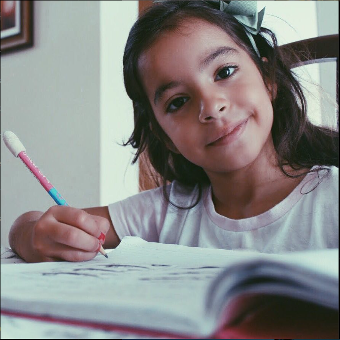
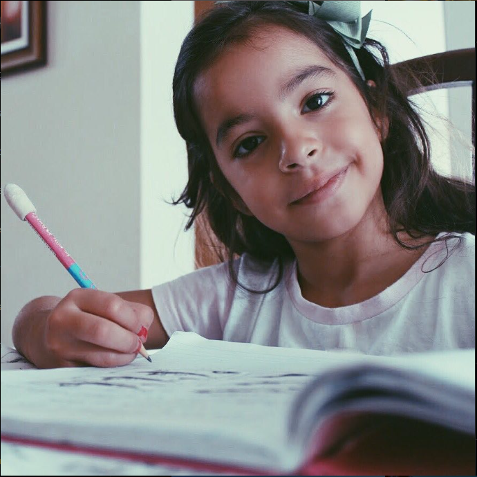

Infelizmente esse ano não tem box, estou liso :(

Para: Sofia Araújo:
FELIZ ANIVERSÁRIOOOOOOOOOOOOOOOOOOO, que Deus te abençoe nesse novo ciclo da sua vida, que você continue crescendo nEle como já tem crescido, e que esse seja apenas mais um dos muitos que vão vir pela frente, enfim, saindo do básico, tem umas coisas que eu queria te falar, acho q parte eu já falei no ano novo mas vou falar de novo: Apesar do tempo passando, você continua tendo um papel importantíssimo pra mim, uma das pessoas q eu mais confio, uma das melhores companhias, uma das melhores influências, também já disse isso mas vc consegue, mesmo sendo uma morgada véia, iluminar o ambiente, trazer alegria, mesmo nas piores circunstâncias, dnv, eu acho impossível alguém não gostar de você depois de te conhecer, de verdade, do mesmo jeito q foi comigo, seu jeito me encantou, mesmo que do seu jeito, você sempre demonstra se importar e isso tem uma importância q vc nem imagina, enfim, tá ficando longo já o texto, só queria tentar pelo menos expressar o quanto eu gosto de você, tipo, muito mesmo, gosto de uma forma que você não imagina de verdade, tipo, acho que nem eu consigo colocar em palavras, enfim, só queria te dizer isso, nunca na sua vida esqueça o quanto vc tem sido importante pra mim e o quanto ainda vai ser, que você tenha um ótimo aniversário e abençoado, que esse novo ciclo da sua vida seja tão bom quanto deve ter sido o último, parabéns pra vc, Sofia, 16 anos de idade já, cada vez mais isosa em kkkkkk
-N'oublie jamais combien je t'aime, Pedro <3
Fotos e Vídeos
 
